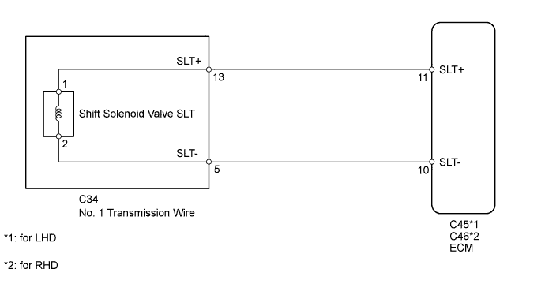
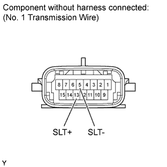
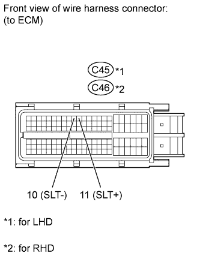

DTC P2716 Pressure Control Solenoid "D" Electrical (Shift Solenoid Valve SLT) |
| DTC Code | DTC Detection Condition | Trouble Area |
| P2716 | Conditions (a) or (b) below are detected for 1 sec. or more (1 trip detection logic). (a) SLT - terminal: 0 V (b) SLT - terminal: 12 V |
|
| Terminal No. (Symbol) | Tool Setting | Condition | Specified Condition |
| C45-11 (SLT+) - C45-10 (SLT-) | 5 V/DIV., 1 msec./DIV. | Engine idling | Refer to illustration |
| Terminal No. (Symbol) | Tool Setting | Condition | Specified Condition |
| C46-11 (SLT+) - C46-10 (SLT-) | 5 V/DIV., 1 msec./DIV. | Engine idling | Refer to illustration |


| 1.INSPECT NO. 1 TRANSMISSION WIRE (SHIFT SOLENOID VALVE SLT) |
 |
Disconnect the C34 No. 1 transmission wire connector.
Measure the resistance according to the value(s) in the table below.
| Tester Connection | Condition | Specified Condition |
| 13 (SLT+) - 5 (SLT-) | 20°C (68°F) | 5.0 to 5.6 Ω |
| 13 (SLT+) - Body ground | Always | 10 kΩ or higher |
| 5 (SLT-) - Body ground | Always | 10 kΩ or higher |
|
| ||||
| OK | |
| 2.CHECK HARNESS AND CONNECTOR (NO. 1 TRANSMISSION WIRE - ECM) |
 |
Disconnect the C45 ECM connector (for LHD).
Disconnect the C46 ECM connector (for RHD).
Measure the resistance according to the value(s) in the table below.
| Tester Connection | Condition | Specified Condition |
| C45-11 (SLT+) - C45-10 (SLT-) | 20°C (68°F) | 5.0 to 5.6 Ω |
| C45-11 (SLT+) - Body ground | Always | 10 kΩ or higher |
| C45-10 (SLT-) - Body ground | Always | 10 kΩ or higher |
| Tester Connection | Condition | Specified Condition |
| C46-11 (SLT+) - C46-10 (SLT-) | 20°C (68°F) | 5.0 to 5.6 Ω |
| C46-11 (SLT+) - Body ground | Always | 10 kΩ or higher |
| C46-10 (SLT-) - Body ground | Always | 10 kΩ or higher |
|
| ||||
| OK | ||
| ||
| 3.INSPECT SHIFT SOLENOID VALVE SLT |
 |
Remove the shift solenoid valve SLT.
Measure the resistance according to the value(s) in the table below.
| Tester Connection | Condition | Specified Condition |
| 1 - 2 | 20°C (68°F) | 5.0 to 5.6 Ω |
Apply 12 V battery voltage to the shift solenoid valve and check that the valve moves and makes an operating noise.
| Measurement Condition | Specified Condition |
| Valve moves and makes an operating noise |
|
| ||||
| OK | ||
| ||